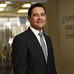
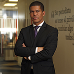
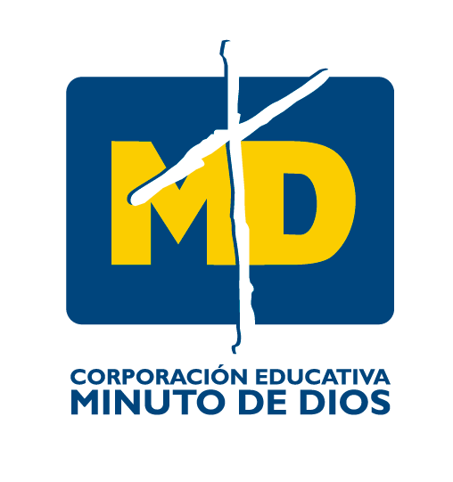
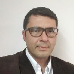
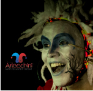

| 07:30 am a 08:00 am | Bienvenida - Apertura del evento Palabras y protocolo de apertura |
 Doctor Salvador |
 Doctor Manjarres |
Ir al evento |
|---|---|---|---|---|
| 08:00 am a 09:00 am | Eucaristía Padre Diego Jaramillo |
 |
Ir al evento | |
| 09:30 am a 12:30 pm | Propiciar aprendizajes en tiempos digitales y pandémicos Daniel Cassany |
 |
Ir al evento | |
| 02:30 pm a 04:40 pm | Seminario taller Gestión de la convivencia escolar – reflexiones para la promoción de convivencia pacífica Juanita Lleras |
 |
Ir al evento |
| 07:00 am a 07:30 am | Oración y saludo de inicio |  Padre Henry Sierra Padre Henry Sierra |
 Jose Jose Argenis |
Ir al evento |
|---|---|---|---|---|
| 07:30 am a 08:30 am | Celebremos los mayores éxitos (CEMID) |  | Ir al evento | |
| 09:00 am a 12:30 pm | Propiciar aprendizajes en tiempos digitales y pandémicos Daniel Cassany |
|
Ir al evento | |
| 02:30 pm a 04:40 pm | ¿Qué es la educación positiva y cómo llevarla al aula? Juan Sebastían Hoyos |
 |
Ir al evento |
| 07:00 am a 07:30 am | Oración y saludo de inicio | Padre Henry Sierra |
Jose Argenis |
Ir al evento |
|---|---|---|---|---|
| 07:30 am a 09:30 am | Materializando el STEM: una propuesta de implementación en el aula David Ariza Betancur |
 |
Ir al evento | |
| 10:00 am. a 12:15 am | Integración de las competencias del siglo XXI Carlos Peñas |
 | Ir al evento | |
| 02:15 pm a 03:35 pm | Presentación teatral LA SELVA DE LOS SUEÑOS Corporación artística Arlecchini |  | Ir al evento | |
| 03:35 pm a 04:40 pm | RETOS CEMID | Ir al evento |